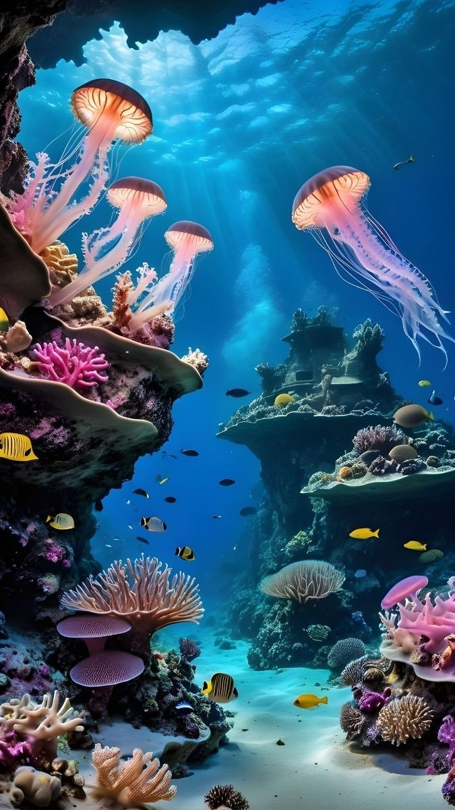
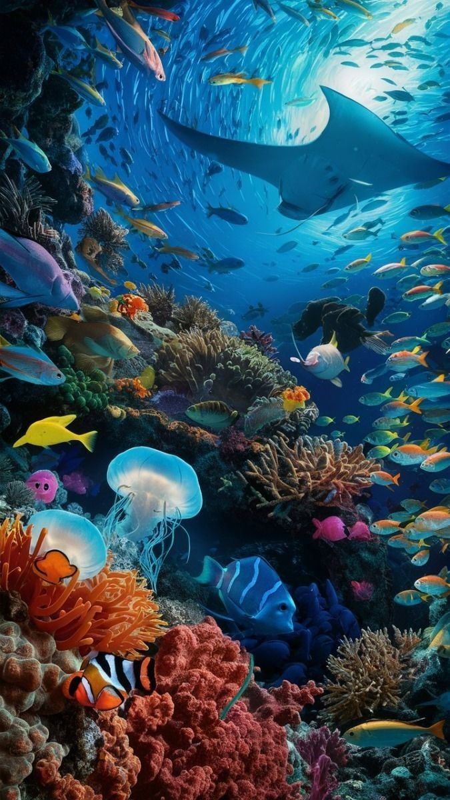
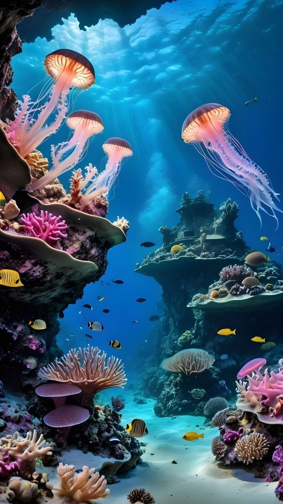
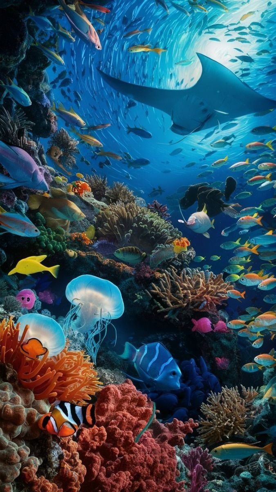

Dunia Biru yang Menenangkan
Laut selalu punya cara sederhana untuk membuat hati terasa lebih ringan. Warna birunya luas tanpa batas, seakan mengajak siapa saja untuk berhenti sejenak dari hiruk‑pikuk kehidupan dan menikmati ketenangan.
Suara ombak yang datang dan pergi terdengar seperti alunan musik alami. Setiap deburan membawa rasa damai, sementara angin pantai menyentuh wajah dengan lembut.
Website ini dibuat untuk menghadirkan suasana tersebut ke dalam bentuk digital. Sebuah ruang kecil tempat kamu bisa membaca, bercerita, dan menyimpan momen berharga melalui foto‑foto pilihanmu.
Tentang Lautan
Lautan menutupi sebagian besar permukaan bumi dan menjadi rumah bagi jutaan spesies makhluk hidup. Terumbu karang, ikan berwarna‑warni, dan hamparan pasir putih adalah bukti bahwa alam menyimpan keindahan yang luar biasa.
Banyak orang datang ke pantai untuk mencari inspirasi, menulis cerita, atau sekadar menenangkan pikiran. Tidak heran jika laut sering dikaitkan dengan perasaan damai dan kebebasan.
Melalui halaman ini, kamu bisa merasakan kembali kenangan liburan, perjalanan, atau momen sederhana yang pernah kamu alami bersama laut.
Cerita di Balik Ombak
Setiap ombak membawa cerita. Ada tawa, ada kenangan, ada langkah kaki kecil di pasir yang perlahan menghilang tersapu air. Semua itu menjadi bagian dari perjalanan hidup kita.
Bayangkan duduk di tepi pantai saat matahari terbenam. Langit berubah jingga, angin berembus pelan, dan waktu terasa berjalan lebih lambat. Saat itulah banyak orang merasa paling dekat dengan dirinya sendiri.
Semoga halaman ini bisa menjadi tempat untuk menyimpan cerita‑cerita kecilmu juga.
 


